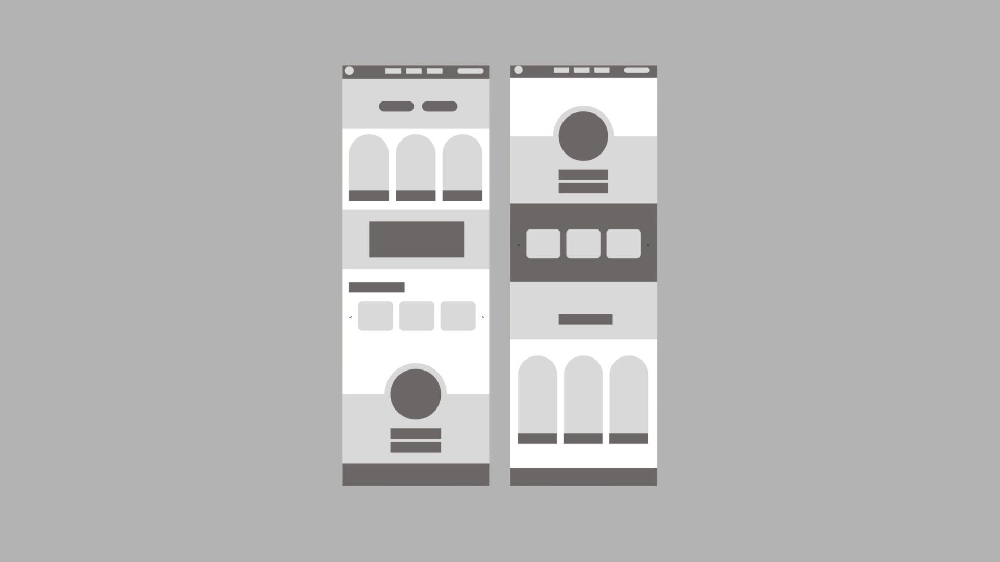

The Problem:
While 541 Eatery & Exchange has a strong and meaningful mission, their digital presence does not fully communicate:
* The impact of their community work
* How the “pay-it-forward” model functions
*Clear ways for users to get involved (donate, volunteer, visit)
The experience lacked emotional connection, clarity, and a strong visual identity that reflects the warmth of the café.
The Goal:
To design a website that:
* Clearly communicates the café’s mission and impact
* Encourages community engagement (donations, volunteering)
* Feels warm, welcoming, and human
* Strengthens brand identity through a cohesive visual system
Research & Insights
I began by researching 541 Eatery & Exchange’s mission, audience, and existing branding to understand how design could better reflect their values of compassion, inclusivity, and community. This research informed a presentation where I identified key opportunities to strengthen their digital presence while staying true to their purpose.

Design Process
Continuing from my research, I created wireframes and mockups that focused on simplicity, accessibility, and a strong sense of belonging—core to 541 Eatery & Exchange’s mission.
The layouts were designed to be clear and easy to navigate, while still feeling warm and welcoming. I prioritized intuitive structure, minimal friction, and thoughtful spacing to guide users naturally through the experience.
Each design decision aimed to reflect the café’s values, ensuring the digital experience felt just as inclusive and community-driven as the physical space.
Design Approach
Brand Direction — “Heart & Fork”
The rebrand introduces a name and identity that reflects both care and community through food.
Visual Style:
* Warm, inviting color palette
* Clean and modern layouts
* Friendly, human tone
UX Decisions:
* Prioritized storytelling before detailed information
* Reduced clutter to guide users clearly
* Focused on accessibility and ease of use
The Solution
The final design presents a cohesive and engaging website that better reflects the heart of the organization.
It improves:
* Clarity of mission
* User engagement
* Emotional connection
* Overall usability
My Role
UX/UI Designer
Team
Solo project
Timeline
4–6 weeks
Tools
Figma